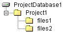

Use the Organize New Project Structure dialog box of the Copy Project wizard (Edit | Copy) to specify how you want to organize new copies of 5.3/6.0 projects. You can organize the new project based the existing 5.3/6.0 project structure, or organize it based on workfile hierarchy.
NOTE If you are copying a Version Manager SCC Interface 5.3/6.0 project, you must organize the new project based on the 5.3/6.0 project workfile hierarchy.
| Based on existing 5.3/6.0 project structure | Select to organize the newly copied project based on the existing 5.3/6.0 project structure. |
| Copy all items in folders | Select to copy all archives, including those stored in folders in the archive location. This option is available only if you select to create the project based on the existing 5.3/6.0 project structure. |
| Include archives that are not in folders | Select to include archives that are not in folders. These archives may be located at the project root level. This option is available only if you select to create the project based on the existing 5.3/6.0 project structure. |
| Based on existing 5.3/6.0 workfile hierarchy |
Select to organize the new project based on the organization of your 5.3/6.0 project workfiles on your hard drive. The advantage of this option is that Version Manager will create a nested project structure if your workfile hierarchy is nested. For example, if you copy a 5.3/6.0 project called Project1, with project files stored in c:\projects\Project1\files1 and c:\projects\Project1\files2, the new project appears as illustrated below:  |
| Migrate SCC Project | Select to migrate a Version Manager SCC Interface 5.3/6.0 project. To migrate a SCC 5.3/6.0 project, you must also select the Based on existing 5.3/6.0 workfile hierarchy option. For complete information about how to upgrade 5.3/6.0 projects that were created via the Version Manager SCC Interface, refer to the Serena ChangeMan Version Manager IDE Client Implementation Guide for your development environment. |
| About Projects | About Workfiles |
| Copy Project - Browse Location Dialog | Copy Project - Create Project Database Dialog |
| Copy Project - Archive Location Dialog | Copying Projects |